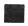
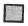
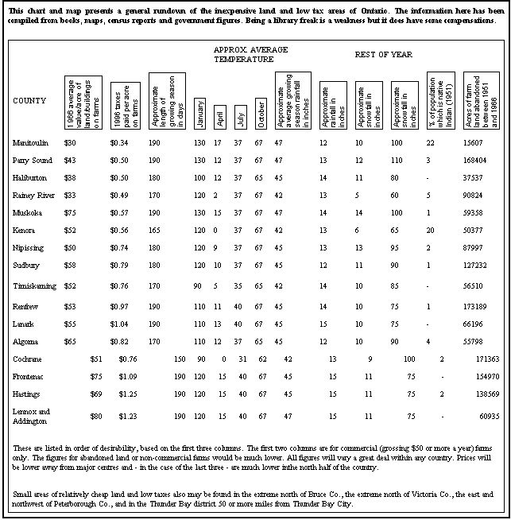

HOMESTEADING IN CANADA
To my mind, if you can afford enough land to support a family in southern Ontario, you should go a bit north and buy enough to support two families
If you want something VERY isolated, like mountains and don't mind a sturdy winter I would recommend this area. It's the closest Ontario comes to mountains and the climate is among the mildest on Lake Superior – which is not saying much! The rivers here are mostly so short they don't reach the roads and railroads (over 50 miles away) and so, should be about as pollution free as possible today.
MANITOULIN: The only area with limestone bedrock, which makes for better soils than land underlaid by the Canadian Shield rocks usually found in this region. Manitoulin has the least expensive land, lowest taxes (by far) and a climate as mild as any other section illustrated and listed. There are relatively few abandoned farms simply because the land IS cheap and good.
The figure of 15, 607 abandoned acres includes bush and rock as well as arable land. Still, 15, 607 acres - even of poor land - can feed a lot of people.
The island is very sparsely populated and contains much land that has never been farmed or that has not been farmed in recent years.
Manitoulin looks best to me.It's hard to be precise north of Lake
Nipessing. Vast areas up there are referred to in official statistics only as "other places".
Much of this land is quite shallow, soil, unfit for plowing. Ideal,
though, for goat husbandry. There are also pockets of good, deep
soil throughout the region and large areas of rich soil in some spots.
Ample potential for almost any type of commune or homestead.
The ideal set-up, I feel, would be a combination of several acres of
good, deep garden soil with the rest of a farm consisting of goat
pasture and woods.
For those looking for something near a good university,I recommend
consideration of the islands near Kingston.
|
 CHEAP LAND, LOW TAXES, SOME RECENTLY (SINCE 1951) ABANDONED FARMLAND |
 SOUTHERN ONTARIO |
THE GREAT LAKES |
|
 |
|
|